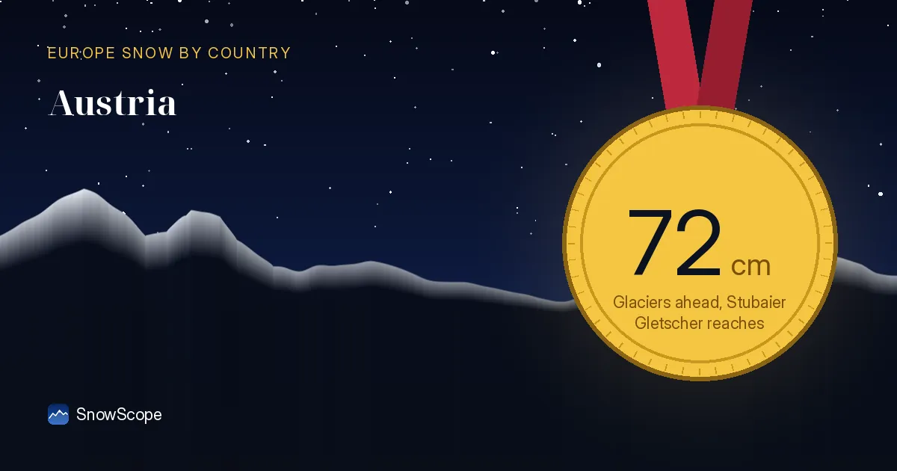
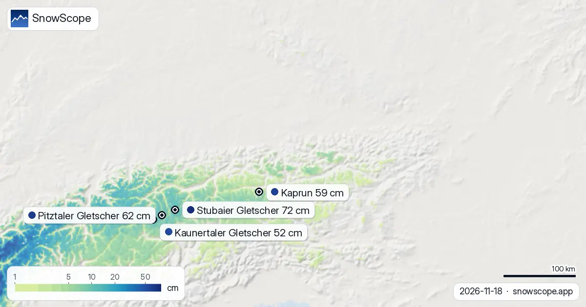
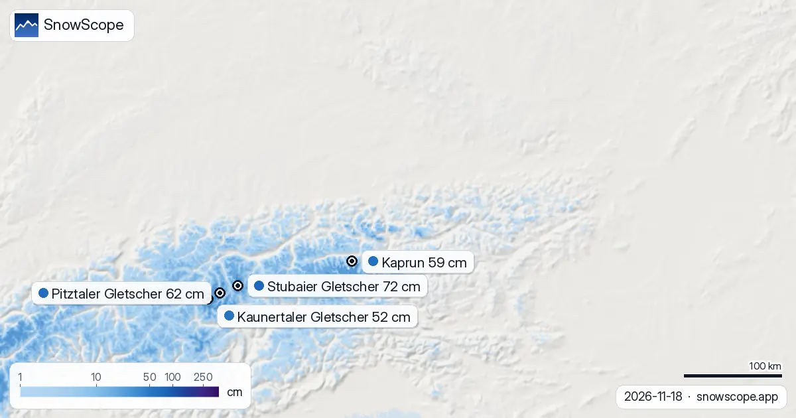
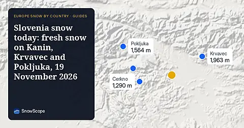

Austria: glaciers ahead, Stubaier Gletscher reaches 72 cm
Glacier resorts across Austria have pulled ahead as the first real snow system moved through the high peaks. Stubaier Gletscher now holds 72 cm, the country's deepest base, with more snow expected over the next three days.
See the live snow forecast for Stubaier Gletscher in the SnowScope appSnow depth, powder alerts and the 3D map, free.
Glaciers lead the charge
When I work in high alpine terrain, timing matters more than luck. The glaciers have caught the first significant system: Stubaier Gletscher climbed 13 cm in 72 hours to 72 cm depth, Pitztaler Gletscher sits at 62 cm with 14 cm new, and Kaunertaler Gletscher added 12 cm to reach 52 cm. These three resorts now hold the deepest bases across Austria. Kaprun and Weißsee Gletscherwelt lag slightly, at 59 cm and 51 cm, but both are ahead of lower resorts.
The pattern is predictable: altitude wins early season. All five leading glacier resorts stand above 2,500 m at their upper slopes, where the air is colder and snow sticks. At that height, our model shows near-perfect snow cover (100 percent) and an average depth of 22 cm across all of Austria's high peaks.
| Resort | Snow depth | New snow, 72 h | Coming, next days | Top |
|---|---|---|---|---|
| Stubaier Gletscher | 72 cm | 13 cm | 16 cm | 3,208 m |
| Pitztaler Gletscher | 62 cm | 14 cm | 19 cm | 3,424 m |
| Kaprun | 59 cm | 7 cm | 11 cm | 3,024 m |
| Kaunertaler Gletscher | 52 cm | 12 cm | 18 cm | 3,107 m |
| Weißsee Gletscherwelt | 51 cm | 7 cm | 14 cm | 2,555 m |

Where snow fell hardest
Vorarlberg caught the heaviest fall: 23 cm in 72 hours. Tyrol and the Ötztal Alps each received 15 cm. These western and central zones are where the system hit first and strongest. The snow line sat at around 1,500 m today, so resorts near that elevation—Kaprun in Salzburg, for example—picked up less than the high peaks. Only 26 percent of terrain between 1,000 and 1,500 m was white.
Below 1,500 m, almost nothing stuck. Ground cover dropped to 1 percent in the 500 to 1,000 m band. This is normal for November in the lower valleys, but it shows why early-season skiers climb to the glaciers.

Snow cover across the altitudes
Our model tracked 18,140 km² of snow-covered ground across Austria on 18 November, up 1,900 km² from yesterday and 2,320 km² from a week ago. That gain looks solid, but it masks an uneven picture. Between 2,000 and 2,500 m, we see 92 percent cover and 10 cm mean depth. Jump to 2,500 m and above, and coverage hits 100 percent with 22 cm average.
The white share of the entire modelled area stands at 35 percent. That sounds low, but November across 52,110 km² of Alpine terrain is typically sparse at mid-altitude. What matters for skiing is the band above 2,000 m, where snow is now reliable.
How this compares to normal
Pitztaler Gletscher and Weißsee Gletscherwelt are already above their mid-November average: 51 cm and 38 cm now versus 45 cm and 31 cm usual. That's a strong start. Kaprun sits at 59 cm—well above its typical 22 cm—and Stubaier Gletscher at 72 cm is tracking toward its November range. Only Kaunertaler Gletscher looks light at 52 cm against an unusual dataset, but its position high in the Ötztal means it should build fast.
The median position across these five resorts is 91 percent of November-normal, which is respectable for mid-month when many lower resorts still have bare ground.
What comes next
Tomorrow, 19 November, looks pivotal. Our model forecasts 12 cm of new snow as the heaviest day in the next three. Over the following two days, another 25 cm could fall. Pitztaler Gletscher may gain 19 cm in the next 72 hours, Kaunertaler Gletscher 18 cm, and Stubaier Gletscher 16 cm. This will fill in gaps and lock in a solid early-season base.
The outlook extends further: 44 cm could fall over the next seven days, with the most snow between 26 November and 2 December. Early December often brings a pulse of Arctic air into the Alps. If that pattern holds, skiers waiting for depth will see real gains by early December.
On the ground: what to watch
I have learned in the mountains that thin early snow often hides obstacles. At 1,500 to 2,000 m, where cover now sits at 66 percent and depth averages 3 cm, rocks and tree stumps remain close. Ski there only if you know the terrain. Above 2,000 m, the picture is cleaner.
Vorarlberg and central Tyrol have the momentum. Watch Pitztaler Gletscher and Kaunertaler Gletscher over the next week—both are well-placed for the forecast pulse and should climb toward 70 to 80 cm by late November if the model holds.
Tips for skiers
- Start high and stay high: all five leading glacier resorts sit above 2,500 m. Snow there is reliable; lower slopes risk thin cover and hidden rocks.
- Pitztaler Gletscher and Kaunertaler Gletscher are forecast to gain 18 to 19 cm in the next 72 hours. If you can wait until late tomorrow, conditions will improve.
- Vorarlberg and the Ötztal Alps caught the most snow in the past three days. Resorts in these zones are ahead of their peers.
- Before going off-piste or into steep terrain, check the official avalanche bulletin for your region. Early-season snow bonds can be weak, especially where new snow sits on thin old layers.
- Below 1,500 m, almost no snow has stuck. Plan glacier or high-altitude resorts; lower resorts will stay brown for another week at least.
About these numbers
Resort snow depths are the deepest snow on the resort's upper slopes from the SnowScope snow model (about 1 km, run of 18 November); they are estimates for an area, not a measurement at one point. Station values are measurements on the date shown. Forecasts can change. Always read the official avalanche bulletin before going off-piste.
Cite this report
For research, teaching or the press: the numbers and charts are free to reuse under CC BY 4.0 with this citation.
SnowScope (2026), Austria: glaciers ahead, Stubaier Gletscher reaches 72 cm, https://snowscope.app/blog/en/2026/11/austria-glaciers-lead-18-november-2026.html, accessed 2026-11-18
SnowScope (Atlas Labs). (2026, November 18). Austria: glaciers ahead, Stubaier Gletscher reaches 72 cm. SnowScope snow reports. https://snowscope.app/blog/en/2026/11/austria-glaciers-lead-18-november-2026.html
BibTeX
@misc{snowscope2026austriaglacierslead18nov,
author = {{SnowScope (Atlas Labs)}},
title = {Austria: glaciers ahead, Stubaier Gletscher reaches 72 cm},
year = {2026},
month = nov,
howpublished = {\url{https://snowscope.app/blog/en/2026/11/austria-glaciers-lead-18-november-2026.html}},
note = {Published 2026-11-18 12:32 UTC; accessed 2026-11-18}
}· CC BY 4.0 · Methods, data and tools →
Stubaier Gletscher: snow and temperature by height, this winter vs last (tools) →
Follow Stubaier Gletscher
Free: a message when fresh snow is coming, and the forecast every morning.
More snow reports

Up to 30 cm of snow fell on northern Velebit and Bjelolasica on Friday 13 November 2026. By Tuesday it was gone. Day by day, what the mountains kept, and when snow comes back.

Only Borovets and Bansko have a trace of snow at the top today, 2 cm each. A week ago Borovets had 11 cm. Day by day, and the one snowy day in the forecast.

Snow is falling on Slovenia's ski mountains today: about 37 cm on Kanin and 21 cm on Krvavec. Where the snow lies, how it compares with past winters, and the next snowy day.